Static evidence only. Final Jay approval pending; no commit, push or deployment. Not Astra geometry work.
Notes and limitations · Verification · Image hashes
Unchanged app default camera. DPR 1 SwiftShader; CPU animation pacing disclosed in notes. Original images contain the ready badge; refined images are actual app framebuffer exports. Open image links for native pixels. Do not infer material/geometry fidelity or subjective approval.
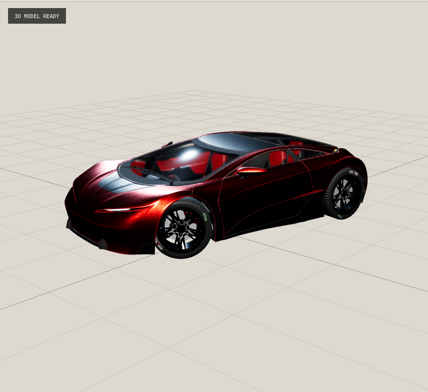
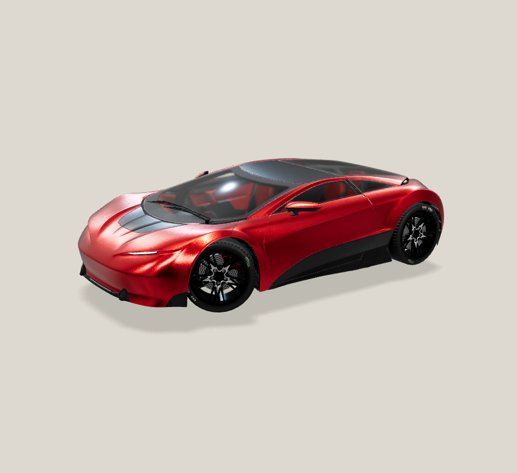
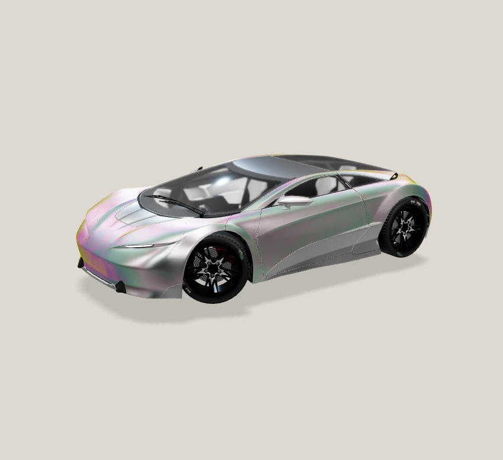
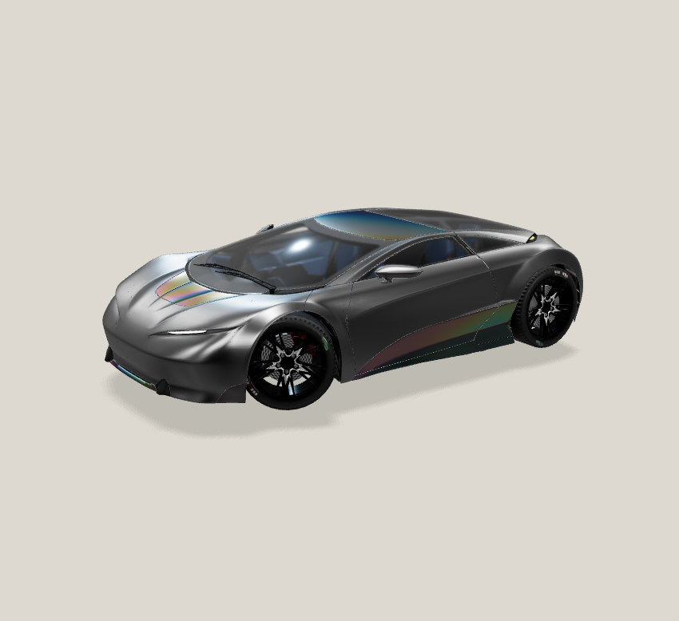
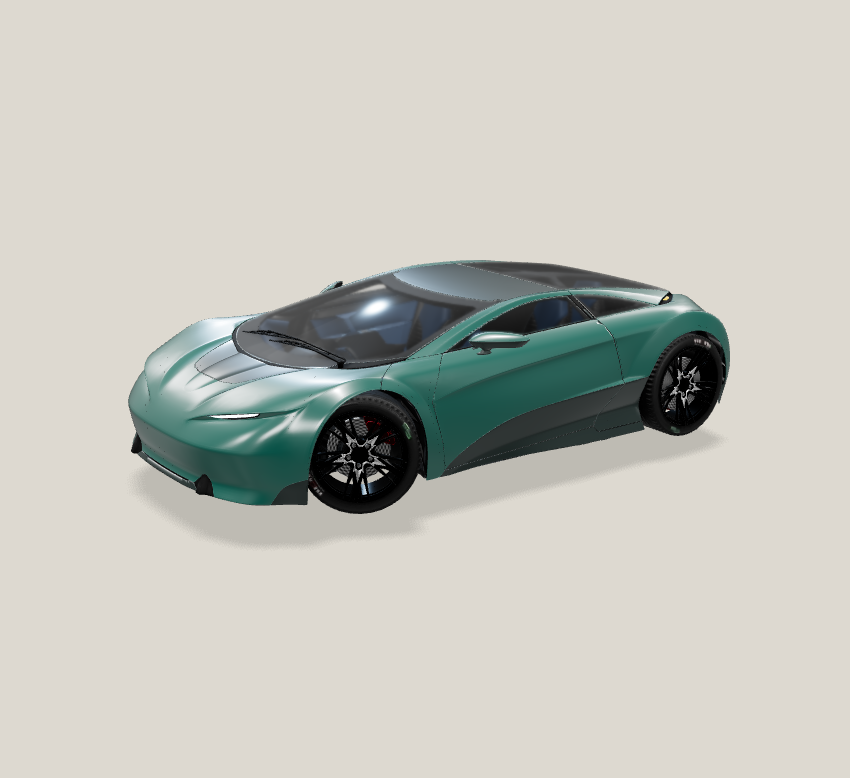
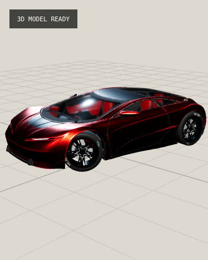
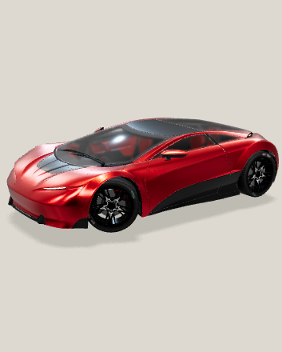
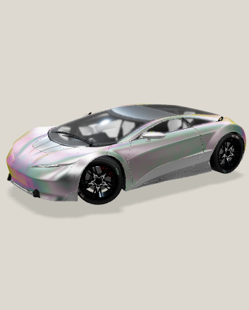
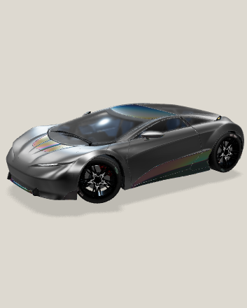
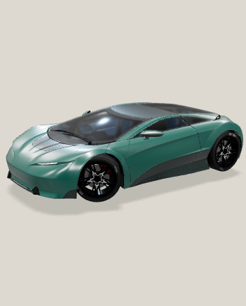
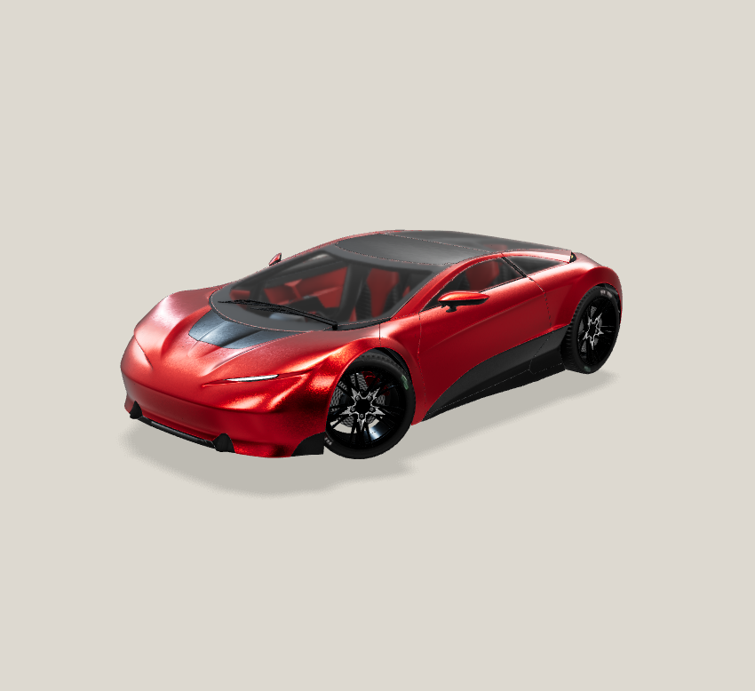